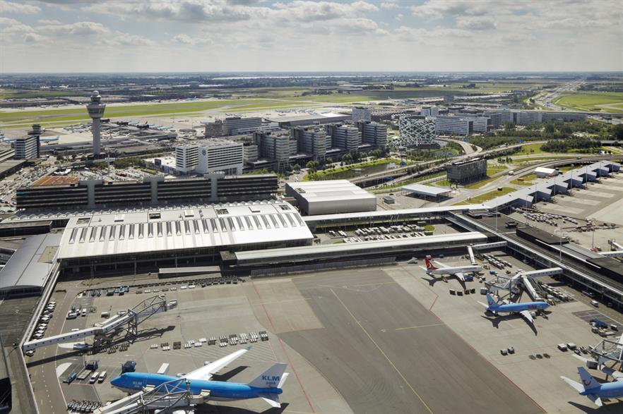
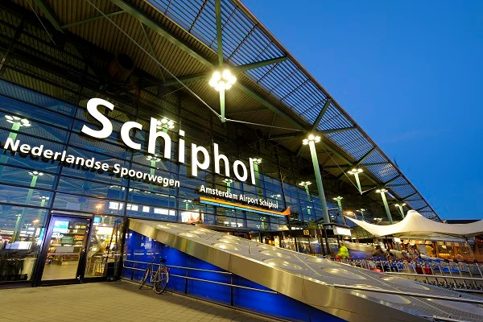
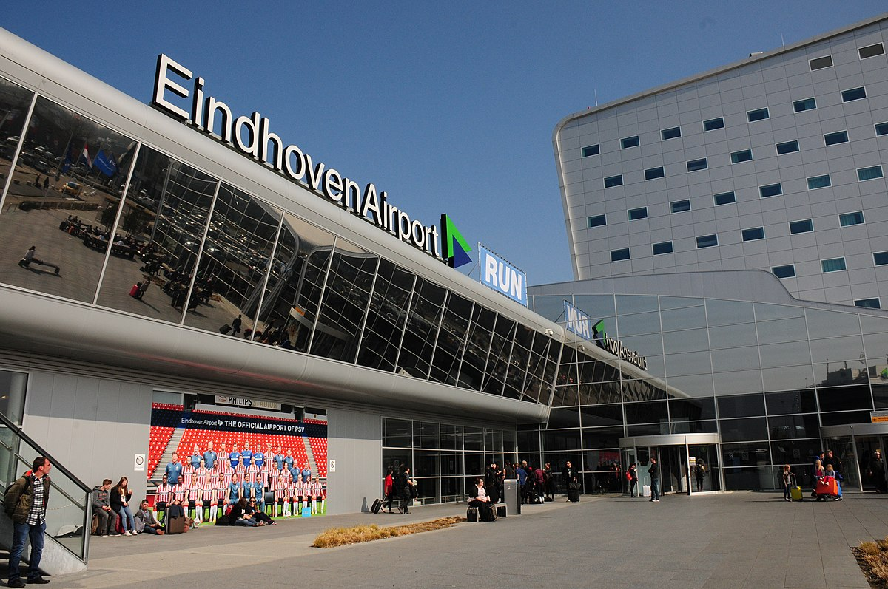
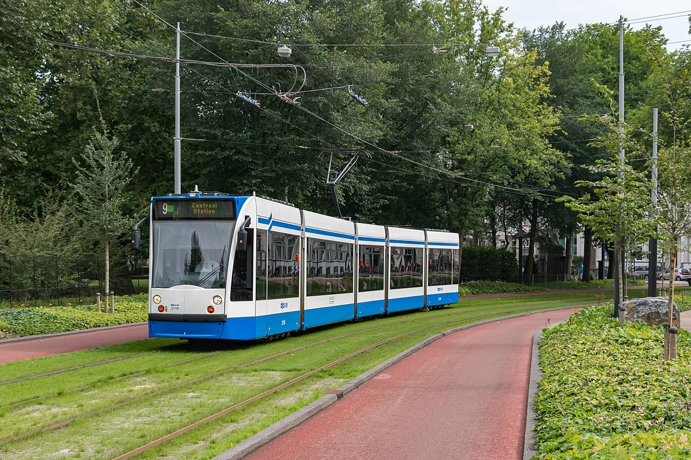
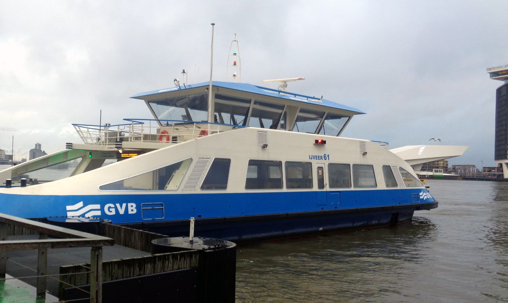

There are only one and only way to travel to Netherland, and that is through airplane✈️.
Dutch Airports
Most likely, you'll be flying out of one of the five airports in the Netherlands.
Maastricht,
Rotterdam, Groningen, and Eindhoven are among the locations of these. Lelystad Airport in
Flevoland
is currently undergoing plans for expansion. However, Amsterdam Schiphol is by far the
biggest
airport in the Netherlands. Schiphol, one of Europe's busiest airports, is only a short
train ride
from the heart of Amsterdam and offers international flights.

Schiphol Airport
The largest airport in the Netherlands and the second busiest in the world in terms of
international
passenger traffic is Schiphol. Roughly 25 million people accessed it in 2021, down from
almost 72
million in 2019. It serves the Greater Amsterdam area and is around 10 kilometres from
Amsterdam. It
boasts a lot of amenities, including dining establishments, shops, and even a spa.
Accessing Schiphol is simple and may be done via train or bus because to its close proximity
to
Amsterdam. Since Schiphol is well connected to the rest of the Netherlands, many locals will
fly
there and then take the train to get home. The airport features plenty of bicycle parking in
addition to car parking.

Eindhoven Airport
Eindhoven Airport is the second-largest airport in the Netherlands. This airport serves as a
major
hub for low-cost carriers including Transavia, Ryanair, and Wizz Air. It primarily travels
to
destinations throughout Europe.
You can take the train to Eindhoven Central Station and then the 400 or 401 bus to go to the
airport. Parking spaces and taxis are also offered.

Comparison of Airplane
Airlines
Price Range
Total Duration of Flight Hours
Stop(s)
Scoot Airline
Around RM1800
25 hours
2 Stops
Malaysia Airline
Around RM2000
19 hours
1 Stop
Emirates
Around RM3000
18 hours
2 Stops
From here, we can see that there are three different airlines company offering different routes to
Netherlands.
The Cheapest flight is the Scoot Airline, but the flight hours
is long.
The flight that has the shortest flight hour is the Emirates.
Overall, Malaysia Airlines is probably the best among all, as the price
is reasonable, at an average flight hours of 19 hours.
🚌Transportation in Netherland🚄
The Dutch public transportation network is clean, efficient, and relatively cheap. The local train
network –
operated by NS (Nederlandse Spoorwegen) – covers much of the country and you can move between cities
cheaply.
Other towns and villages are connected by bus links, while the northern islands have ferry access.
The OV-chipkaart
The OV-chipkaart (OV stands for openbaar vervoer, or public transport)
is the Dutch
smart-card payment
system
that operates across the country on all public transport options. There are two types of
OV-chipkaart:
anonymous
and personal. Anonymous cards can be bought and topped up from
machines and
ticket offices at train and
metro
stations. Personal cards need to be purchased online, and you will need to provide a
photo for the card.
These
cards can be topped up online or at a ticket machine. Alternatively, you can sign-up for
automatic
top-ups
when
your balance falls below a certain amount. Journey costs are determined by the distance
of your journey
and
varies depending on the mode of transport. When you check in, a boarding fare is debited
from your card.
When
you check out at your destination, you will be refunded this boarding fare, minus the
charge for the
kilometers
you’ve traveled. However, if you fail to check out, you will have to pay the whole
boarding fare, up to
€20.
One of the best ways to plan a journey in a new country is by looking up your options online. The
Netherlands
has a wealth of public transport apps, including:
9292 – this app and website allows you to plan your journey in detail, with
options for
walking, cycling,
trains, trams, and buses. It also allows you to check fares and order credit online.
NS – the national train app has an in-built journey planner to organize your
train
travel. It also keeps
you
up
to date on delays and cancellations.
ov-chipkaart.nl (website only) – on the OV-chipkaart website you can order a
personal
transport card,
check
your
balance, print travel declarations, and manage subscriptions.
• 9292 App
• NS App
• ov-chipkaart.nl
Traveling by tram in the Netherlands
There are few things better than taking the tram if you want to admire the charming Dutch
streets without actually walking or cycling through them. The Netherlands' four main
cities—Amsterdam, Rotterdam, The Hague, and Utrecht—each have their own tram system.
Amsterdam has the largest network of these, with 500 tram stations spread across 15 lines.
Trams are typically the quickest mode of public transit in the Netherlands for getting
through congested city centres. They also serve as fantastic ways to experience the city,
though. In fact, one of the top tram routes in the world, according to National Geographic,
is Amsterdam's Tram 2. It begins at Centraal Station and highlights some of the top sights
in the city, such as the Royal Palace and Rijksmuseum.

Ferries in Netherland

When considering public transportation, ferries might not be your first choice, but in the
Netherlands, your closest one might be your best bet. Bicyclists and pedestrians can cross
the IJ for free in Amsterdam. If you're seeking for an authentically Amsterdam experience,
services are available 24/7. In the Netherlands, there are other types of ferries as well.
Ferries that span rivers with pedestrians and bicycles are available on some rivers. Some
require your own operation, while others are manned. Additionally, ferries run between the
mainland and the northern islands, including Texel. If you're planning a bike trip in
particular, check ahead to avoid disappointment since you might need to take a detour over
the next bridge if the ferry isn't operating.
Air transport in Netherland
The airlines in Netherland are most likely none. It was likely because that travel between places in
Netherland is very convenient. There are still few flights that flew from Rotterdam to Amsterdam and vice
versa. The flight costs €201, which is RM 905. It only has 1 stop and is located in London.